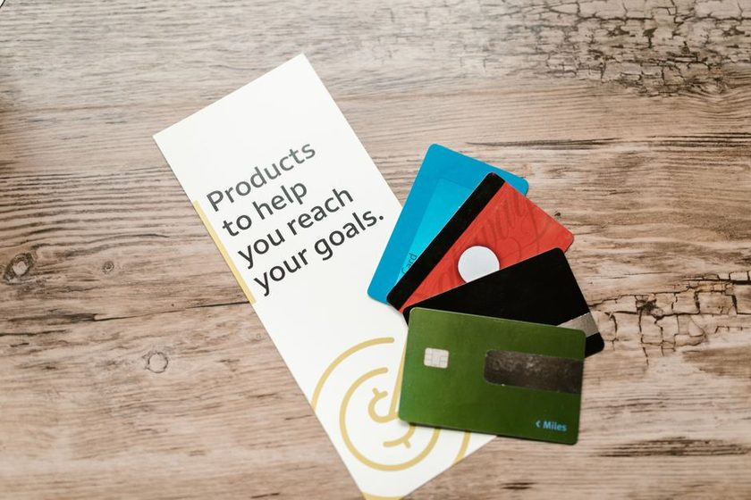

Open Finance explicado: seus dados trabalhando por você
Durante décadas, os seus dados financeiros ficaram trancados dentro do banco onde você abriu a conta. Extrato, histórico de pagamentos, comprovação de renda — tudo isso pertencia, na prática, à instituição, e não a você. O Open Finance vira essa lógica do avesso: a informação passa a ser sua, e você decide para quem, por quanto tempo e com qual finalidade ela será compartilhada.
Parece abstrato, mas o efeito é concreto no bolso. Quando um banco enxerga o seu histórico real de pagamentos, ele consegue oferecer crédito mais barato, um limite mais justo e propostas feitas sob medida. O outro lado da moeda é a segurança: dado financeiro na mão errada é ouro para o golpista. Neste guia, você entende o que é, como conceder e revogar o consentimento e como não cair em armadilhas que imitam o sistema.
O que é Open Finance, na prática
Open Finance é um sistema, coordenado pelo Banco Central, que permite o compartilhamento padronizado de dados financeiros entre instituições — sempre mediante o seu consentimento. Nenhum dado circula sem que você autorize, ponto a ponto, o que será compartilhado e com quem.
A ideia central é simples: se a informação é sua, você deveria poder levá-la de um banco para outro com a mesma facilidade com que troca de operadora mantendo o número de telefone. Na prática, isso significa autorizar que o Banco A envie ao Banco B o seu histórico de conta, de cartões, de investimentos ou de empréstimos — para que o Banco B possa te fazer uma proposta melhor.
Pense no Open Finance como um "porta-a-porta" dos seus dados: você é o dono da mudança e decide o que entra na caixa, para onde vai e quando o caminhão pode passar de novo.
Open Banking x Open Finance: qual a diferença?
Muita gente usa os dois termos como se fossem a mesma coisa, e faz sentido a confusão — um virou o outro. O Open Banking foi a primeira fase e cobria basicamente dados de conta corrente, cartão e crédito. O Open Finance é a evolução: ampliou o escopo para incluir investimentos, previdência, seguros e câmbio.
Em resumo: Open Banking cuidava do "banco"; Open Finance cuida das suas "finanças" como um todo. Hoje, o nome oficial é Open Finance justamente porque o sistema foi muito além da conta bancária.
Como funciona o consentimento
O consentimento é o coração de tudo. Sem ele, nada acontece. Quando você autoriza um compartilhamento, define três coisas:
- Quais dados — cadastro, saldo, extrato, faturas de cartão, investimentos. Você não é obrigado a liberar tudo.
- Com qual instituição — a que vai receber os dados para te oferecer algo.
- Por quanto tempo — o consentimento tem prazo de validade, em geral de até 12 meses, e pode ser renovado ou cancelado antes disso.
Um ponto que gera dúvida: autorizar o compartilhamento não abre a sua conta para saques nem transferências. Compartilhar dados e movimentar dinheiro são coisas separadas. A movimentação (como o pagamento via Open Finance) exige uma autorização própria, feita a cada operação.
Os benefícios reais para o seu bolso
Compartilhar dado por compartilhar não faz sentido. O valor está no que você recebe em troca. Os três ganhos mais concretos são:
1. Ofertas de crédito melhores
Quando um banco só te conhece "de fora", ele precisa cobrar caro para se proteger do desconhecido. Ao ver o seu histórico real — contas pagas em dia, renda que entra todo mês, relacionamento antigo com outro banco — ele consegue oferecer juros menores. Isso é especialmente útil para quem tem um bom comportamento financeiro mas um score de crédito que ainda não reflete tudo isso. O Open Finance permite "provar" que você é bom pagador com dados, não com promessas.
2. Um agregador de todas as suas contas
Tem conta em três bancos e cartão em dois? Com o Open Finance, um único aplicativo autorizado pode reunir tudo em uma só tela: saldos, faturas, investimentos e vencimentos. Você para de abrir cinco apps para saber quanto tem no total. É a base para uma boa gestão de orçamento — inclusive para aplicar métodos como o 50-30-20 com números reais, e não estimados.
3. Portabilidade mais fácil
Quer trocar de banco ou levar uma dívida cara para uma instituição que cobra menos? O compartilhamento de dados agiliza a portabilidade de crédito e de salário, porque o novo banco já recebe o seu histórico pronto, sem você precisar juntar comprovantes manualmente.
| Vantagens | Cuidados |
|---|---|
| Ofertas de crédito com juros potencialmente menores | Só autorize dentro de apps oficiais das instituições |
| Visão única de todas as contas e cartões | Revise seus consentimentos ativos periodicamente |
| Portabilidade de crédito e salário simplificada | Desconfie de links e mensagens que citam "Open Finance" |
| Você é o dono e controla o que compartilha | Compartilhe apenas os dados necessários para a oferta |
| Consentimento com prazo e revogável a qualquer hora | Nunca informe senha do banco fora do app oficial |
Cuidados e segurança
O sistema em si foi desenhado para ser seguro: os dados trafegam por canais criptografados e regulados, e nenhuma instituição pode puxar sua informação sem consentimento. O elo mais frágil, como quase sempre, é o comportamento do usuário. É aí que os golpistas atacam.
O golpe mais comum é o phishing que imita o Open Finance: você recebe um SMS, e-mail ou ligação dizendo que "seu consentimento venceu" ou que "há um compartilhamento pendente" e precisa "reautorizar" clicando num link. O link leva a uma página falsa que copia o visual do banco e rouba sua senha. É a mesma lógica de muitos golpes do PIX: usar um termo técnico real para dar ares de legitimidade.
Guarde estas regras de ouro:
- Toda autorização acontece dentro do app oficial do banco, nunca por um link recebido. Se pediram para você clicar em algo para "ativar o Open Finance", é golpe.
- O Banco Central e o Open Finance não ligam pedindo senha, código ou dados. Ninguém legítimo pede isso.
- Revise seus consentimentos. No próprio app, existe uma área de Open Finance onde você vê tudo que autorizou e pode cancelar.
- Compartilhe o mínimo necessário. Se a oferta só precisa do seu histórico de crédito, não libere seus investimentos junto.
Passo a passo: como conceder o consentimento
- Dentro do app da instituição que vai receber os dados (a que quer te fazer uma oferta), procure a opção "Open Finance" ou "Trazer meus dados".
- Escolha a instituição de origem — o banco onde estão os dados que você quer compartilhar.
- Selecione quais dados serão compartilhados e revise o prazo.
- Você será redirecionado, dentro do ambiente seguro, para autenticar no banco de origem (com biometria ou senha do próprio app).
- Confirme. O compartilhamento começa e fica registrado nos dois apps.
Como revogar (cancelar) um consentimento
- Abra o app do banco (origem ou destino) e vá até a área de Open Finance / Compartilhamento de dados.
- Localize o consentimento ativo que quer encerrar na lista.
- Selecione "Cancelar" ou "Revogar". O acesso é interrompido — o que já foi enviado não some, mas nenhum dado novo será compartilhado dali em diante.
Vale a pena aderir?
Para a maioria das pessoas, sim — desde que com consciência. O Open Finance é uma ferramenta poderosa para pagar menos juros, organizar a vida financeira e trocar de banco sem burocracia. Ele funciona a seu favor justamente porque coloca você no controle da informação que sempre foi sua.
A chave é tratar cada consentimento como uma decisão, não um clique automático. Autorize dentro do app oficial, libere só o necessário, revise de tempos em tempos e desconfie de qualquer mensagem externa que cite o assunto. Se você quer acompanhar todas as suas contas em um só lugar e receber lembretes de vencimentos, o app Norteia foi pensado para isso, sempre com você decidindo o que compartilhar. Dados bem usados são uma vantagem; dados mal cuidados, um risco. O Open Finance dá a você o poder de escolher qual dos dois eles serão.
Leia também



PIX Automático 2026
Como funciona a cobrança recorrente por PIX e como não ser pego de surpresa.
Quer entender os termos técnicos? Veja o glossário financeiro (com verbetes de Open Finance, PIX e score) ou tire dúvidas rápidas na página de perguntas frequentes.